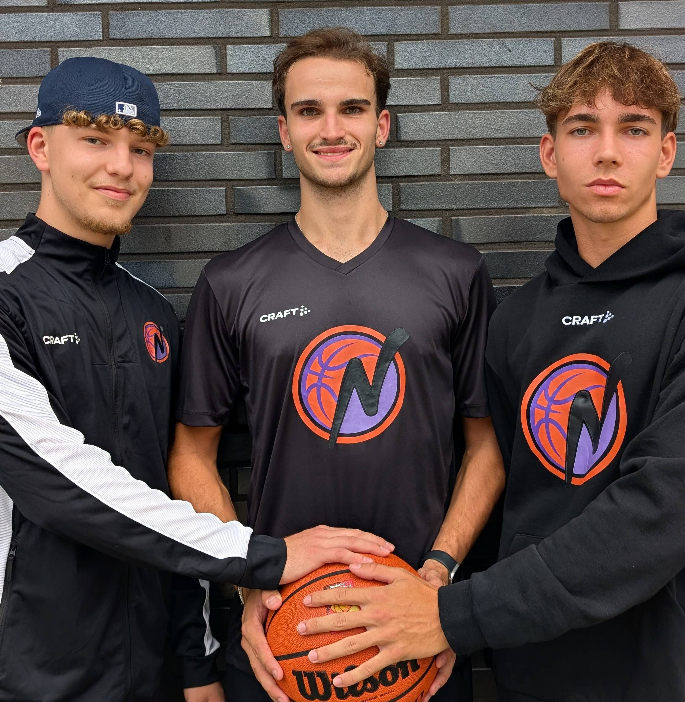

Die NBC Baskets Nordhorn gehen ihren eingeschlagenen Weg konsequent weiter: Junge Spieler sollen Schritt für Schritt Verantwortung übernehmen, sich im Herrenbereich entwickeln und langfristig das Vereinsprojekt mittragen. Noah Sperling, Luis Freriks Da Palma und Malte Lohmölder gehören zu den jungen Akteuren, die diesen Weg mitgehen und mit Tempo, Intensität und Entwicklungspotenzial zusätzliche Optionen geben.
Noah Sperling bringt Landesliga-Erfahrung zurück
Noah Sperling kehrt nach langer Zeit im Ausland berufsbedingt nach Nordhorn zurück. Der 20-Jährige war bereits Teil der Regionsliga-Meistermannschaft und stand anschließend im Landesliga-Kader, wo er mit seiner Schnelligkeit und Athletik gute Akzente setzen konnte. Mit ihm gewinnt der NBC einen weiteren Spieler mit Landesliga-Erfahrung zurück.
Luis Freriks Da Palma bringt Wurfstärke ein
Luis Freriks Da Palma bringt Größe, einen starken Wurf und ebenfalls Erfahrung aus dem Landesliga-Kader mit. In der vergangenen Saison entwickelte sich der 19-jährige Flügelspieler besonders in der Rückrunde zu einem Leistungsträger und Scorer der Regionalliga-Mannschaft.
Malte Lohmölder mit vielseitigem Spiel
Malte Lohmölder wurde ebenfalls in der eigenen Jugend ausgebildet. Der 18-Jährige überzeugt mit einem vielseitigen Allround-Spiel, guter Arbeitsmoral und starkem Zug zum Korb. Auch er hat bereits gezeigt, dass er im Herrenbereich bestehen kann, und soll nun weiter an das Herrenniveau herangeführt werden.
Olliges setzt bewusst auf Entwicklung
Trainer Patrick Olliges sagt: „Unser Weg ist klar: Wir wollen jungen, entwicklungsfähigen Spielern Verantwortung geben und sie an den Herrenbereich heranführen. Noah, Luis und Malte passen mit ihren Stärken zum schnellen, intensiven Basketball, den wir spielen möchten.“
Junge Spieler als Baustein
Die NBC Baskets setzen ihren Weg fort: junge Spieler entwickeln, Verantwortung geben und gemeinsam den nächsten Schritt machen.
Artikel teilen
Für Instagram: Link kopieren und in deinem Post oder Story verwenden.